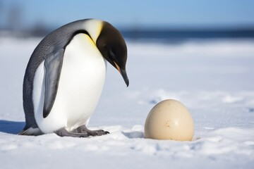
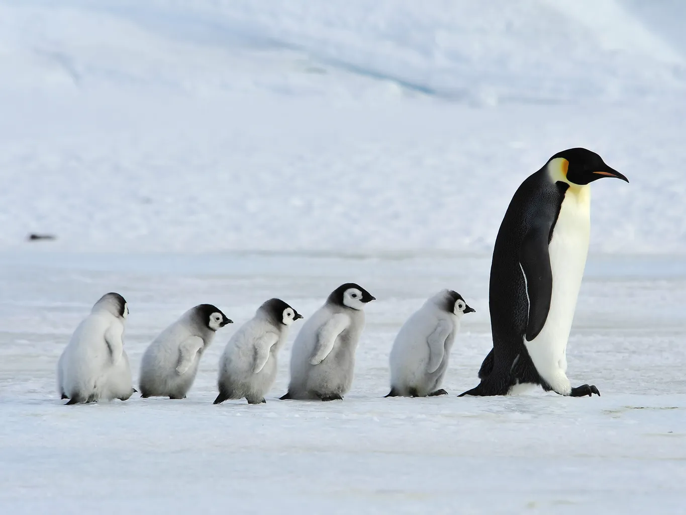
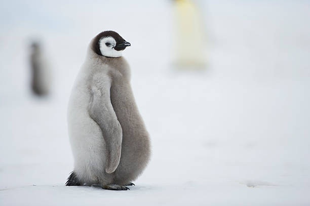
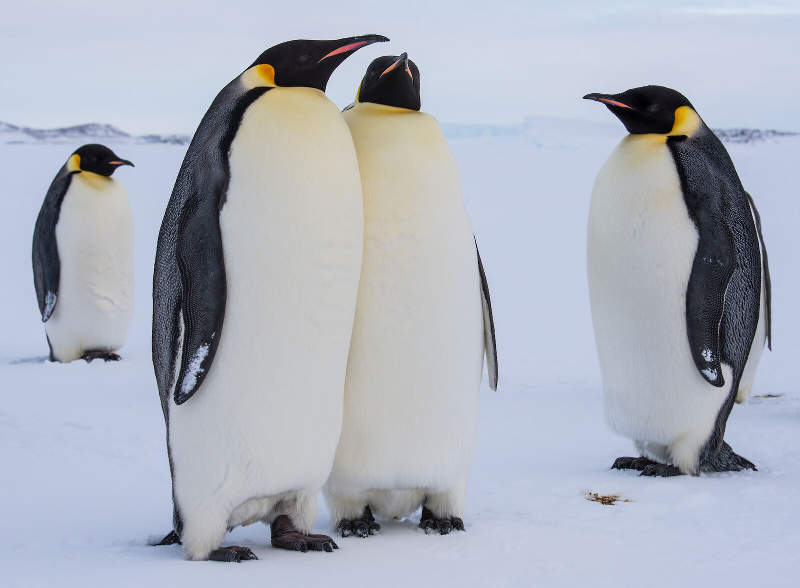

The Life of a Penguin
Egg Stage
Penguin life begins when a female lays one or two eggs, depending on the species. Nests vary widely—some penguins build shallow scrapes lined with pebbles, while others, like Emperor Penguins, balance their eggs on their feet and cover them with a warm brood pouch. Both parents typically share incubation duties, taking turns keeping the egg warm and protected from freezing temperatures, strong winds, and hungry predators such as skuas. This stage can last more than a month, requiring patience and coordination between the parents.

Chick Stage
After the egg hatches, a small, down-covered chick emerges. At this stage, it cannot regulate its own body temperature and depends completely on its parents for warmth and food. Adults feed chicks by regurgitating nutrient-rich meals caught at sea. As the chick grows, it becomes stronger and more alert. In many species, chicks eventually join crèches—group gatherings of young penguins that huddle together for warmth and safety while both parents search for food. This social behavior greatly increases their chances of survival.

Juvenile Stage
When chicks are old enough, they undergo their first molt, replacing their fluffy down with sleek, waterproof feathers. This marks their transition into the juvenile stage. Juvenile penguins begin to explore the world beyond the colony, learning to swim efficiently and catch their own prey. Although they look similar to adults, their feathers are usually duller and they lack the bold markings of maturity. This stage is critical and challenging—young penguins must quickly develop the skills needed to avoid predators, navigate the ocean, and find food independently.

Adult Stage
Adult penguins spend most of their time at sea, diving for fish, krill, and squid. They are exceptional swimmers, capable of deep and lengthy dives. Outside of the breeding season, they may travel long distances following food sources. On land, adults return to their breeding colonies, often migrating hundreds or thousands of miles to reach the same site each year. Many species form strong pair bonds and reunite with the same mate annually. Adults must balance the demands of feeding, avoiding predators like leopard seals, and coping with shifting environmental conditions.
